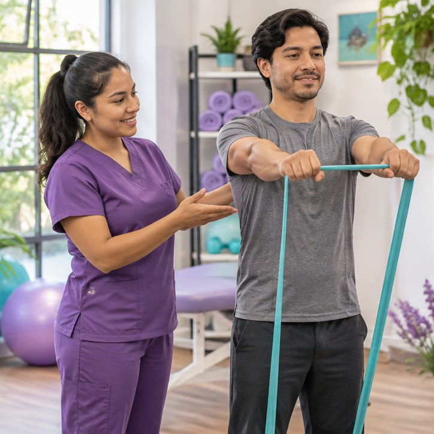
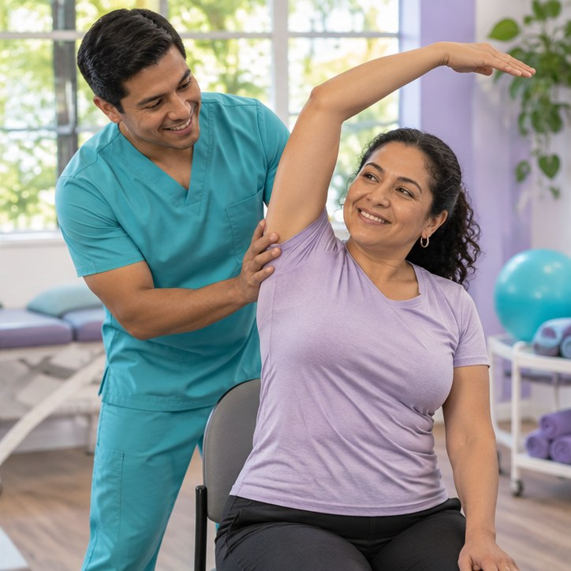

Kinesiología
Una mirada al movimiento, la función física y las actividades que quieres retomar.
Qué puedes conversar
Comenta qué movimientos te cuestan, cómo te afecta en tu día a día y qué actividades te gustaría recuperar.
CENTRO DE REHABILITACIÓN Y BIENESTAR
Kinesiología, psicología y quiropráctica en Kineli. Conoce las especialidades y escríbenos para consultar por atención.
ESPECIALIDADES
Una mirada al movimiento, la función física y las actividades que quieres retomar.
Comenta qué movimientos te cuestan, cómo te afecta en tu día a día y qué actividades te gustaría recuperar.
Un espacio de conversación para explorar tus emociones, vínculos y experiencias.
Puedes hablar de lo que te preocupa, de cambios recientes o de algo que te gustaría entender mejor de ti.
Un enfoque centrado en la columna y otras articulaciones del sistema musculoesquelético.
Comparte tus antecedentes y pregunta en qué consiste la evaluación, qué opciones existen y cuáles son sus riesgos.
Escenas ilustrativas de kinesiología y psicología.


ANTES DE CONSULTAR
Piensa en lo que te trae a la consulta y anota las preguntas que quieras hacer. Si tienes antecedentes relevantes, puedes comentarlos con el profesional.
Puedes preguntar por la formación del profesional, cómo se realiza la evaluación, cuáles serían los objetivos de la atención y cuánto cuesta la consulta.
Puedes conversar con cada profesional sobre tus objetivos y mencionar si ya recibes otro tipo de atención.